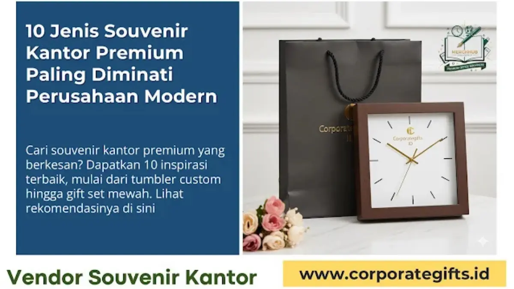

Corporate Gifts ID - Souvenir kantor premium adalah barang eksklusif berkualitas tinggi yang diberikan perusahaan kepada klien, mitra bisnis, atau karyawan berprestasi guna memperkuat relasi bisnis dan meningkatkan citra profesional (branding). Di era persaingan bisnis yang semakin kompetitif, hadiah perusahaan bukan sekadar formalitas tahunan, melainkan strategi komunikasi nilai dan reputasi korporasi. Pemilihan souvenir yang tepat memastikan jenama Anda senantiasa diingat melalui produk yang fungsional, elegan, dan berdaya guna tinggi.
Poin Kunci Souvenir Kantor Premium:
- Investasi Nilai Branding: Cenderamata premium merefleksikan profesionalisme dan keseriusan perusahaan dalam membina relasi bisnis jangka panjang.
- Fokus pada Kualitas & Durabilitas: Memilih material tangguh seperti stainless steel SUS304, kulit asli/sintetis premium, dan kayu alami untuk daya tahan bertahun-tahun.
- Subtle Branding: Menghindari logo yang mencolok; gunakan grafir laser tipis, deboss halus, atau print UV presisi agar produk nyaman digunakan di ruang publik.
- Pilihan Produk Fungsional: Didominasi oleh perkakas kerja esensial, gadget penunjang mobilitas, dan perlengkapan meja kantor bernilai estetika.
Memilih Souvenir Kantor Premium yang Tepat
Souvenir kantor premium merupakan representasi langsung dari standar profesionalisme bisnis Anda. Dengan pendekatan kurasi yang terencana, barang promosi ini bertransformasi menjadi sarana pemasaran relasional yang berkesinambungan. Manfaat strategis yang didapatkan antara lain:
- Meningkatkan Citra Profesional Perusahaan: Memberikan impresi kuat bahwa institusi Anda sangat menghargai kualitas mutu, ketelitian detail, dan respek tinggi kepada penerimanya.
- Mempererat Hubungan Bisnis Jangka Panjang: Membangun ikatan emosional dan loyalitas kemitraan dengan klien prioritas, mitra strategis B2B, serta jajaran komisaris dan direksi.
- Menciptakan Brand Awareness yang Menyenangkan: Produk berkualitas tinggi digunakan secara intensif dalam aktivitas kantor harian, memastikan identitas visual perusahaan terus terlihat oleh lingkungan kerja profesional.
10 Jenis Souvenir Kantor Premium Terpopuler
Untuk mendukung strategi penguatan jenama korporasi modern, berikut sepuluh kategori souvenir kantor eksklusif yang memadukan nilai guna tinggi dan keanggunan desain:
1. Tumbler Stainless Custom
Tumbler berinsulasi termal vakum berdinding ganda (double-wall vacuum) berbahan stainless steel food grade SUS304. Mampu menjaga suhu air panas atau dingin hingga 12-24 jam. Dilengkapi penutup anti-bocor, tumbler ini merepresentasikan komitmen perusahaan terhadap kesehatan dan gaya hidup ramah lingkungan (eco-friendly).
2. Powerbank Branding Fast Charging
Sebagai gawai penunjang mobilitas kerja para eksekutif, powerbank berkapasitas 10.000 hingga 20.000 mAh dengan teknologi pengisian cepat (Power Delivery / Quick Charge) menjadi pilihan utama. Sentuhan logo perusahaan melalui grafir laser presisi memberikan kesan modern dan futuristik.
3. Notebook Kulit Eksklusif
Buku catatan agenda dengan sampul kulit sintetis premium (PU leather) beraksen jahitan rapi. Kustomisasi logo menggunakan teknik emboss atau deboss tanpa foil memberikan tampilan klasik berwibawa yang disukai para manajer dan pimpinan rapat.
4. Pulpen Metal Signature
Pulpen berbahan logam kuningan atau aluminium berbobot mantap dengan mekanisme putar (twist action) atau rollerball lembut. Grafir laser nama penerima di samping logo perusahaan menjadikannya cenderamata personal untuk momen penandatanganan kontrak kemitraan penting.
5. Speaker Bluetooth Mini Portabel
Perangkat audio nirkabel dengan balutan bodi aluminium atau aksen kayu alami. Sangat cocok dihadiahkan sebagai bingkisan akhir tahun, penghargaan tahunan karyawan berprestasi (employee recognition), maupun doorprize gathering eksekutif.

Kombinasi produk teknologi, alat tulis metal, dan wadah insulasi premium memberikan impresi berkelas bagi mitra korporat.
6. Wireless Charger Stand Meja
Dudukan pengisi daya nirkabel Qi-certified yang merapikan kabel kusut di meja kerja kantor. Desain minimalis dengan lapisan permukaan bambu terbarukan atau matte finish menjadikannya hiasan meja sekaligus perkakas kerja produktif.
7. Set Alat Makan Travel Berkelanjutan
Set perlengkapan makan portabel (sendok, garpu, sumpit stainless steel) yang tersusun rapi dalam kotak kemasan gandum (wheat straw) atau pouch kanvas. Menegaskan pesan kepedulian perusahaan terhadap isu keberlanjutan lingkungan hidup (sustainability).
8. Gift Set Office (Pulpen & Card Holder)
Kombinasi hadiah kerja serasi yang dikemas dalam boks karton tebal (hardbox) bermagnet dengan bantalan busa beludru. Perpaduan dompet kartu nama kulit asli dan pulpen metal menghadirkan presentasi hadiah yang sangat formal dan terhormat.
9. Jam Meja Kayu Klasik Digital
Jam meja kubus berbalut serat kayu alami dengan tampilan display LED modern, pengukur suhu ruang, dan fitur alarm. Kehadirannya di atas meja kerja memastikan nama jenama perusahaan Anda terpampang konstan dalam sudut pandang mitra setiap hari kerja.
10. Tas Laptop atau Ransel Premium Anti-Air
Item berdaya guna dan nilai persepsi (perceived value) sangat tinggi. Tas punggung tahan air dengan kompartemen laptop berbusa tebal, port USB eksternal, dan desain ergonomis, menjadikannya hadiah prestisius bagi mitra bisnis strategis.
Tabel Rekomendasi Souvenir Kantor Premium
Berikut rangkuman komparasi karakteristik dan estimasi anggaran untuk mempermudah pemilihan souvenir kantor yang tepat:
| Kategori Souvenir | Karakteristik Utama | Estimasi Anggaran | Cocok untuk Segmen |
|---|---|---|---|
| Tumbler Stainless Steel | Vacuum double-wall, tahan suhu 12 jam, SUS304 | Rp65.000 - Rp150.000 | Karyawan, peserta seminar, mitra kerja |
| Gadget & Elektronik | Powerbank fast charging, wireless charger, speaker | Rp120.000 - Rp350.000 | Profesional muda, klien tech, eksekutif |
| Stationery Mewah | Notebook kulit deboss, pulpen metal grafir nama | Rp50.000 - Rp180.000 | Manajer, notaris, pimpinan rapat korporat |
| Office Gift Set Hardbox | Paket kombinasi serasi, kemasan hardbox magnetik | Rp150.000 - Rp450.000 | Klien prioritas VIP, penandatanganan MoU |
| Tas Ransel Laptop | Bahan kanvas water-repellent, slot laptop empuk | Rp180.000 - Rp500.000 | Mitra strategis, reward tahunan karyawan |
Tips Memilih Souvenir Kantor untuk Klien VIP
Agar investasi pengadaan cenderamata Anda memberikan dampak optimal pada imbal hasil objektif (Return on Objective - ROO), cermati empat panduan esensial berikut:
- Riset Profil dan Karakteristik Penerima: Selaraskan jenis hadiah dengan kebiasaan kerja penerima. Hadiah gadget nirkabel sangat tepat bagi generasi digital, sedangkan notebook kulit dan pulpen metal berukir nama lebih memikat para pimpinan senior.
- Prioritaskan Daya Tahan Material (Durabilitas): Cenderamata promosi yang ringkih dan cepat rusak justru mencoreng citra kredibilitas perusahaan. Pilih material berkualitas tinggi yang menjamin masa pakai bertahun-tahun.
- Terapkan Teknik Subtle Branding yang Elegan: Hindari mencetak logo perusahaan dalam ukuran raksasa yang mendominasi barang. Sentuhan grafir laser tipis, deboss buta (blind deboss), atau inisial kecil memberikan kesan mewah tanpa membuat penerima canggung memakainya di forum resmi.
- Sesuaikan Tingkatan Anggaran (Tiering Budget): Buat stratifikasi hadiah yang terukur antara paket souvenir massal untuk event publik, souvenir apresiasi internal karyawan, serta gift set eksklusif untuk jajaran klien kunci.
Kesimpulan: Bangun Citra Profesional Melalui Souvenir Eksklusif
Souvenir kantor premium bukan sekadar biaya operasional promosi, melainkan instrumen investasi reputasi yang memperkuat fondasi kemitraan bisnis. Melalui pemilihan item yang fungsional, material yang kokoh, dan personalisasi branding yang anggun, perusahaan Anda berhasil menanamkan kesan profesionalisme yang mendalam dan bertahan lama.
Konsultasikan kebutuhan cenderamata kantor dan gift set eksklusif instansi Anda bersama tim CorporateGifts.ID. Kami menyediakan layanan kustomisasi penuh, pembuatan preview mockup desain gratis, serta jaminan mutu produksi tepat waktu ke seluruh kota di Indonesia.
Pertanyaan Seputar Souvenir Kantor Premium (FAQ)

Ditulis oleh: Vendor Souvenir Kantor
Tim Teknis Produksi & Spesialis Pengadaan Resmi B2BDivisi teknis produksi mesin cetak laser, sablon industri, dan flatbed UV di CorporateGifts.ID. Berpengalaman lebih dari 8 tahun dalam menangani pengadaan cenderamata perusahaan skala massal, integrasi perpajakan B2B, dan jaminan kontrol kualitas produksi.
Lihat Profil Lengkap & Panduan Lainnya